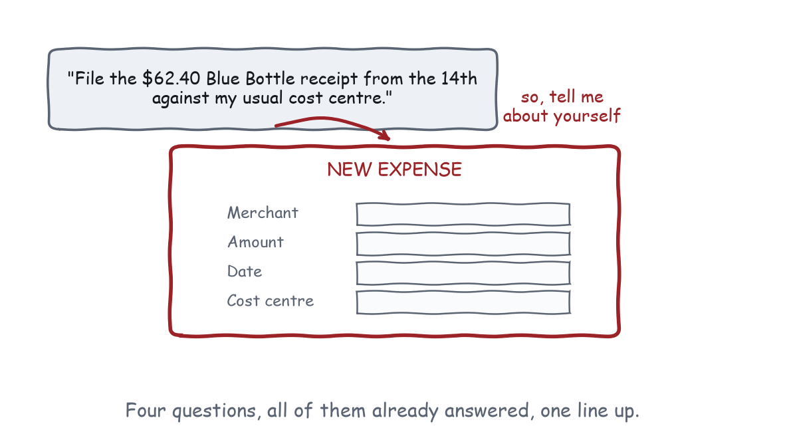
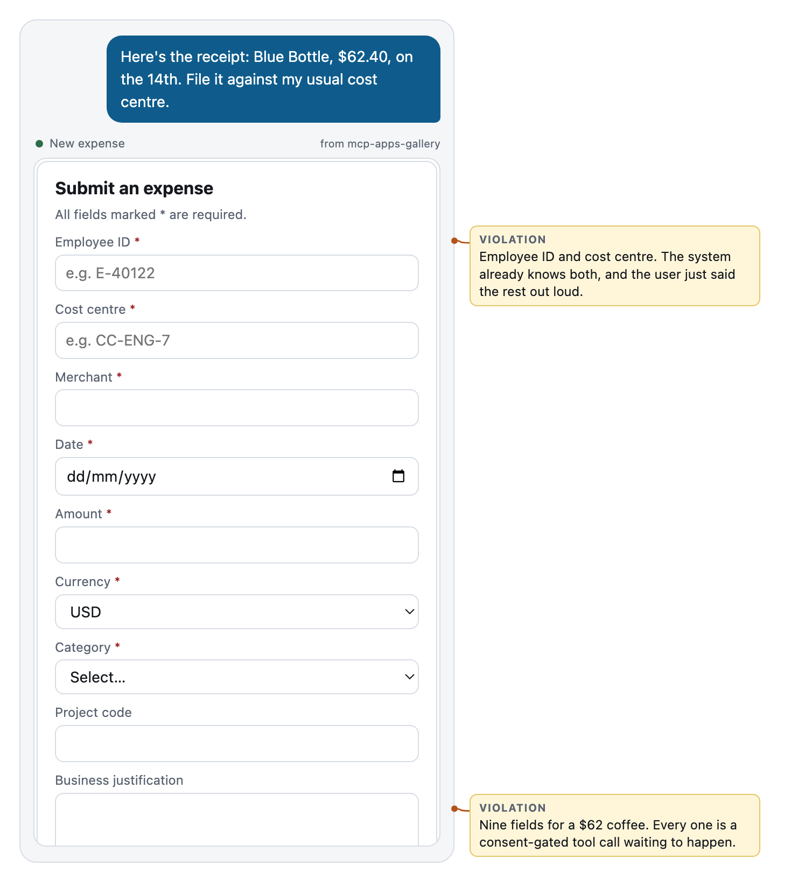
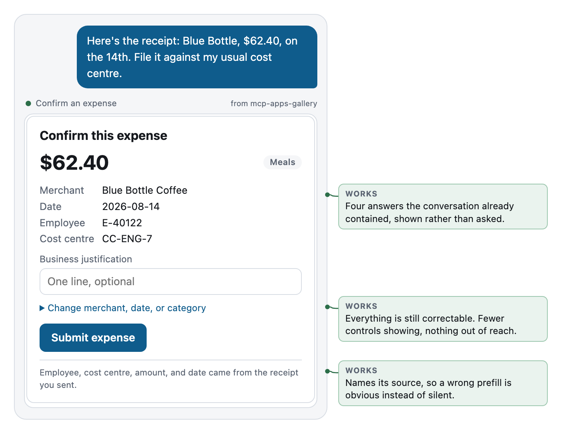

Chapter 4
Never Ask What the Conversation Already Knows
Prefill from context, make it correctable, and treat every click as a tax.
This is the law with the shortest path from violation to insult.
The user typed the answer. It is above your widget on the screen, in their own words, in their own message, thirty seconds ago. Your app rendered an empty field asking for it. The user is now retyping something they already said, into a box, inside a conversation whose entire premise is that they should not have to do that.

Krug’s version of this law is “mindless choices”: the interface asks a question the user has no basis to answer, or no interest in answering, and every one of those is a small tax on getting anything done. Our version is worse, because the answer was not merely obvious. It was stated.
What the conversation knows
More than you think, and it accumulates.
By the time your tool is called, the model is sitting on:
- What the user said. Explicitly, in this session, in their own words.
- What the user said earlier. Three turns back, which they will absolutely expect you to remember, because a person would have.
- What previous tools returned. Including yours, if you have been called before in this conversation.
- What the model inferred. “My usual cost centre” resolves to
CC-ENG-7because that came back from a lookup two turns ago.
All of that is available to you, if you let it be. The mechanism is unglamorous: put the fields in your input schema, describe them, and the model fills them in when it calls you.
That last clause is the part people miss. A field the model can fill is a field the user never sees. Your input schema is not a validation artefact. It is the list of questions you are choosing not to ask.
Compare the two expense tools in the gallery. The before version:
inputSchema: { type: "object", properties: {} }No inputs. The tool takes nothing, so the model passes nothing, so the app knows nothing, so the app asks for everything. Nine fields, in a chat, for a $62 coffee. The empty schema is not a neutral choice. It is the decision to interrogate the user, made accidentally, in a file nobody reviewed.
The after version:
inputSchema: {
type: "object",
properties: {
merchant: { type: "string" },
amount: { type: "number", exclusiveMinimum: 0 },
currency: { type: "string", default: "USD" },
date: { type: "string", format: "date" },
category: { type: "string", enum: ["Travel", "Meals", "Software", "Other"] },
},
}Five properties, and the model fills all five from one sentence of user input. Note enum on category: the model now picks from a closed set instead of inventing “Food & Bev”, and the human gets a correct default instead of a dropdown.
Prefill, and then show your work
Prefilling is half the job. The other half is making the prefill visible and correctable, because prefill without visibility is just a confident guess that nobody audited.
The pattern that works, in three parts:
Show what you assumed. Not in a tooltip. On screen, in the layout, as facts. The gallery’s confirmation shows merchant, date, employee, and cost centre as a small definition list. Four things the user did not type into this widget, all of them checkable at a glance.
Say where it came from. One line at the bottom: Employee, cost centre, amount, and date came from the receipt you sent. This is the single highest value sentence in most widgets and it costs nothing. It converts a mysterious prefilled form into a summary the user can verify, and it converts a wrong prefill from a silent error into an obvious one.
Make correction cheap and quiet. Not a modal. Not an edit mode. A disclosure labelled with what is inside it: Change merchant, date, or category. Closed by default, one click away, and nothing is lost when it stays closed.
That is progressive disclosure done honestly: fewer controls showing, everything reachable. The dishonest version hides things behind a gear icon labelled nothing, and then congratulates itself on a clean interface.
Every click is a tool call
Here is the part that is structurally different from the web, and it is the reason this law is a law rather than a preference.
On a web page, a click is free. It is a DOM event. Nobody approves it, nobody logs it, nobody sees a permission dialog.
In this medium, a click that does anything is a tools/call that travels from your sandboxed iframe to the host, through whatever consent policy the user has configured, out to the server, and back. Hosts may prompt. Hosts may prompt every time, depending on how the user set things up and how destructive the tool looks.
So every interactive control you add is a potential permission dialog you have added, and permission dialogs have a well-documented failure mode: after the fourth one, people stop reading them. That is not a hypothetical. It is the entire history of mobile permission prompts, and it is how consent fatigue turns a security feature into a rubber stamp.
Which gives you a design rule with an unusually clear justification:
Every control you add spends a little of the user’s willingness to read the next consent prompt, including the ones that matter.
Four fields the model could have filled are not four small annoyances. They are four opportunities to teach somebody that clicking through is fine.
Teardown: nine fields becomes one confirmation
The task: the user sends a receipt and says “file it against my usual cost centre.”

Count what is being re-asked. Employee ID: the system knows this, because it knows who is talking. Cost centre: the user just referred to it, and a lookup resolved it two turns ago. Merchant, date, amount, currency: all four are in the receipt, and all four were in the sentence.
That leaves category, which the model can infer with an enum, and justification, which is genuinely optional and genuinely unknown.
Nine fields. Two of them carry information the system did not already have. The other seven are a transcription exercise.
There is a second failure here, quieter and worse. Look at what the model sees after this renders: nothing. The tool returned “Expense form opened.” The user now fills in nine fields, and the model watches none of it. Law 2 and Law 3 fail together, because they usually do.

The amount is the headline, because that is the thing a person checks. The four known facts sit underneath as a list, verifiable in one pass. One field is open, and it is the one field nobody could have filled in for you. The disclosure holds the corrections. The origin line says where the prefill came from.
One question instead of nine. Not by removing capability, and not by removing information. By using what was already said.
When you genuinely need to ask
Sometimes you do need input, and the law does not forbid it. It forbids asking for what you already have. Three cases where asking is right:
The information does not exist yet. A justification, a preference, a judgement call. Nobody has said it, so somebody has to.
The stakes justify confirmation. “Yes, delete the production database” is a question worth asking even though the intent is clear, because the cost of being wrong is unbounded. Chapter 9 is about how to ask it well.
The user is exploring. A slider that re-ranks, a filter that narrows. Nothing here is being re-asked, because the user is generating new information by playing with it. This is the case that earned the slider in Chapter 1.
The test that separates those from the violations: if the user answered this already, would my widget notice? If the answer is no, you are not asking. You are interrogating.
The elicitation escape hatch
There is one more option, and it is worth knowing before you build a form at all.
Core MCP already has a way to ask the user a structured question without any UI of your own. The host renders it, in its own style, with its own accessibility and its own consent handling. You provide a schema, you get an answer.
If your widget is a form and nothing else, that mechanism may beat it. It is faster to build, it is consistent with every other prompt the user has seen, and it works in hosts that do not render apps at all. Chapter 9 opens with the case where it wins, because it wins more often than app developers like to admit.
What to remember
The conversation is a database and you have read access. Put fields in your schema so the model can fill them. Show what you assumed, say where it came from, make the correction one click away and closed by default. Every control you add is a consent prompt you might have added, and consent prompts are a shared resource you are spending on somebody else’s behalf.
Next chapter: what happens when you keep asking these questions honestly, which is that most of your widget disappears.